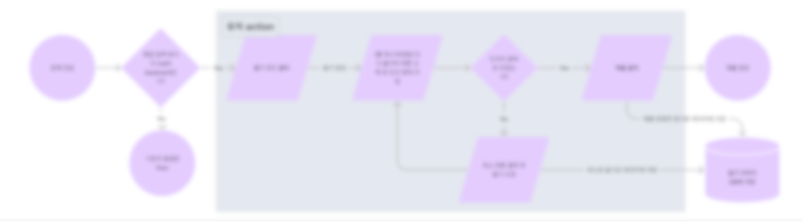
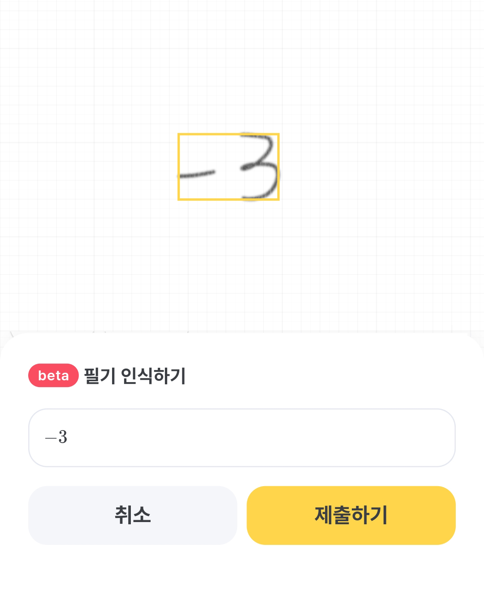

필기로 정답 입력 기능 기획
🗺 기획 배경
아래 내용은 기획 당시의 의도를 정확히 보여드리고자 일부 재구성하여 작성하였습니다.
고객이 직면한 문제
- 수식 키보드를 통해 정답을 입력하는 방식 → 방정식이나 함수 등 정답 입력이 복잡하면 유저의 정답 입력 시간이 길어짐
- 필기를 해서 문제를 모두 푼 이후 한 번 더 수식키보드로 정답을 작성해야 하는 불편함 존재
- 관련 VOC
- 답을 입력하기가 너무 어려워요 ㅠㅠㅠㅠㅠㅠㅠ
- 분수를 입력할 때 분자부터 입력하게 되어 있어서 반대로 입력하게 되는 경우가 많아요. 분수는 읽을때도 쓸때도 분모분의 분자이니 분모부터 입력이 되게 바뀌었으면 합니다.
- 정답 체크 할 때 문자 입력보다 오엠알 같이 클릭하는 기능이 있으면 입력보다 시간 절약이 될 것 같아요
- 정답 입력하기 너무 힘들어요 x제곱 x세제곱 답 입력하다가 2문제 틀렸어요
- 틀린 문제중에 정답 적는 걸 잘못한 것도 포함되서 계속 실수해요ㅠㅠ 틀린문제중에서도 실수한거랑 정말 몰라서 틀린걸 구분할 수 있으면 좋겠어요.
- 문제 풀어서 답을 직접 써야 할때 키보드가 불편해요. y랑 z 가 보이질 않아서 답을 쓸 수가 없는데 어떻게 하나요?
- 스마트폰으로 할때는 문제 답 쓰는 키보드 자판이 저절로 축소되어서 답을 쓰지 못했어요
회사 내부의 이슈
- 개발팀에서 Computer Vision으로 필기를 수식으로 인식하는 AI 모델 개발
- 효율적으로 정답을 입력하는 필요성이 증가
- 앞으로 더 많은 개념원리 교재를 앱에 탑재 예정
- 더 많은 수학 기호가 수식 키보드에 포함해야 함 → 버튼이 많아지면 수식 키보드의 효율이 떨어짐
🧭 기획 목적 및 목표
기획 목적
- 수식 키보드를 사용하는 복잡한 정답 입력 과정을 없애, 유저에게 정답 입력에 대한 부담을 줄여준다.
기획 목표
- (문자/숫자/기호가 모두 포함된 주관식 답안 기준)필기로 정답을 입력하면 수식 키보드 입력 방식과 비교하여 훨씬 시간을 절약할 수 있게 만든다.
- 정답 입력을 포함한 문제 풀이 시간은 난이도에 따라 평균 30초~5분 내외로 형성
- 수식 키보드로 주관식 답안 작성 시 최소 5초에서 최대 1분 정도의 정답 입력 시간이 필요
- 풀이 시간과 답안 작성 시간 비율을 고려하였을 때, 10% 이상의 풀이 시간 감소 효과 기대
🏗 서비스 제작 과정
기술 검토를 위한 개발팀 미팅
- 가능한 요소 : 필기를 인식하여 LATEX으로 변환, 인식할 필기 영역을 지정하는 기술
- 제한되는 요소 : 기존 수식키보드와 동일한 답안 입력창을 쓸 수 없으며, 한 번 인식한 필기의 일부 문자만 수식키보드로 수정할 수 없음
화면 기획
- figma를 활용하여 유저 flowchart 및 와이어프레임 제작
- 유저가 처음 해당 기능을 사용할 때 튜토리얼 화면
- 필기 화면에서 필기 인식 정답 입력 기능 버튼 클릭 → 인식할 영역 지정 → 인식 내역 확인 → 정답 제출 → 유저 피드백

개형 — 유저 플로우차트
- UI/UX 디자이너와의 소통 후 각 단계의 화면 UI 확정
기능 개발
- 변경 사항 및 추가 고려 사항 검토
- 기능 QA
🚀 결과물 및 목표 달성 여부
결과물


목표 달성 여부
필기 인식 기능이 적용되고 6주가 지난 시점에서, 아래 데이터를 기반으로 목표를 달성하였다고 판단
- 약 600명의 학생이 15,000건 이상 사용
- 주요 유저 VOC
- 7을 8로 인식하는 경우가 간혹 있어요. 차수 인식을 잘 해서 편하네요!
- 엄청 인식 잘되서 편해요!!
- 제 글씨체가 좋은걸수도 있지만 와ㅡ인식을 너무 잘해요 진짜 너무 편하고 너무좋아요ㅜㅜ 나중에는 객관식도 할 수 있음 좋을 것 같아요:))
- 완전 잘 됩니다! 서술형 글씨가 문제였는데 연습이 되겠네요
- 잘 되고 있어서 좋아요🥳
- 주요 유저 VOC
- 정답이 충분히 많이 제출된 90여개의 문항을 뽑아 풀이 시간 데이터를 비교하였을 때, 아래와 같은 결과를 확인
- 문항 중 약 80%에서 실제 풀이 시간 감소 효과 확인
- 개별 문항에서 풀이 시간 최대 63% 감소
- 대상 문항 90여 개를 모두 풀 때 이전 대비 약 17% 정도 풀이 시간 감소